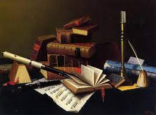

Arte
Poema en verso - John Milton A.
Raya el alba y sale el sol;
Se ve el primer rayo de luz del día;
Se levanta el poeta según el son
Del grato compás de la arpa y la lira.
Oye éste el trinar del ave
Que pinta el pintor en su limpio cuadro,
Que con su pincel sobre el lienzo barre
De mil tonos el simple blanco.
Mira igual el primor del hombre
Que usa al marcar las plumas del azulejo,
Que éste bate mientras así come
Bichos de la base de un árbol viejo.
Pero se vuelve y ve a aquel abuelo
Que hecha atrás de la muerte las voces
Con las notas que toca de forma tan noble
En las cuerdas de aquel violín viejo
Pasa luego el días
Y cada uno se llena,
En la paz du ses propias vidas
De sus tonos, notas y letras
Y al fin de este rumbo,
El poeta se sienta y piensa:
"Las notas son letras vivas,
Los tonos nos notas mudas,
Las letras son notas muertas
Y el arte es una misma letra".